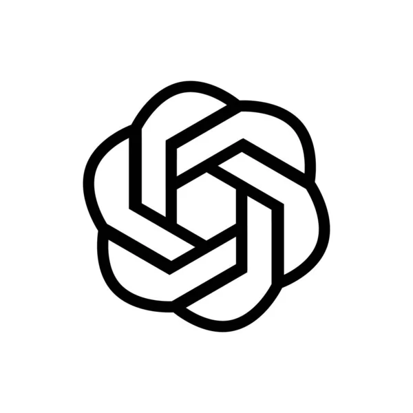

USTAWIENIA TWOJEJ PRZESTRZENI
Nauka.
Po Twojemu.
Twój model. Twój sposób myślenia.
Resztą zajmie się OKStudy.
Wybierz swoją pomoc w nauce
Połącz konto, wybierz model i zacznij od pierwszego zadania.
Klucz jest przechowywany lokalnie na tym urządzeniu.

Połącz swój plan ChatGPT
Zaloguj się na stronie OpenAI i zezwól na korzystanie z planu.
Pierwsze połączenie na Windows
Logowanie wymaga niewielkiego modułu OKStudy. Zainstaluj go raz dla tej przeglądarki. Potrzebny jest Node.js 22 lub nowszy.
- Otwórz folder companion z paczki OKStudy.
- Uruchom w nim PowerShell i wykonaj poniższe polecenie.
- Wróć tutaj i kliknij Continue with ChatGPT.
Dostępność modeli i limity zależą od konta. Korzystanie z abonamentu nie przełącza się automatycznie na płatne API.
Jak działa korzystanie z planu ChatGPT ↗Wybierz model obsługujący obrazy. Limity i opłaty zależą od konta dostawcy.
Tak, jak lubisz się uczyć
Dopasuj odpowiedzi, głos i wygląd do siebie.
Express po Twojemu
PODGLĄD NA ŻYWOOd pytania do odpowiedzi
Uruchamiaj analizę tak, jak jest Ci najwygodniej.
Zaznacz
Kliknij ikonę OKStudy i wybierz fragment ekranu. Popraw ramkę, a potem potwierdź.
Zrozum
Przeczytaj wyjaśnienie w panelu obok strony. Dopytaj o każdy niejasny krok.
Zapamiętaj
Wróć do historii lub pobierz odpowiedź jako notatkę.
Zaznaczony tekst możesz też wysłać z menu pod prawym przyciskiem myszy.
Twoje dane, pod Twoją kontrolą
Wybierz, co OKStudy ma zapamiętywać na tym komputerze.
Zadania i zrzuty
Do wybranego dostawcy trafia zaznaczony tekst lub obraz
oraz kontekst rozmowy. Zrzuty nie są zapisywane na dysku przez OKStudy; ostatnie obrazy mogą
pozostać krótko w pamięci, żeby umożliwić dopytanie.
Klucze i konto
Klucze API są przechowywane lokalnie, poza synchronizacją
Chrome. Moduł ChatGPT na Windows zabezpiecza poświadczenia kontem systemowym.
Historia sesji
Przy wyłączonym trwałym zapisie historia znika po
restarcie przeglądarki, przeładowaniu lub aktualizacji rozszerzenia.
Usunąć wszystkie zapisane zadania i odpowiedzi z OKStudy?